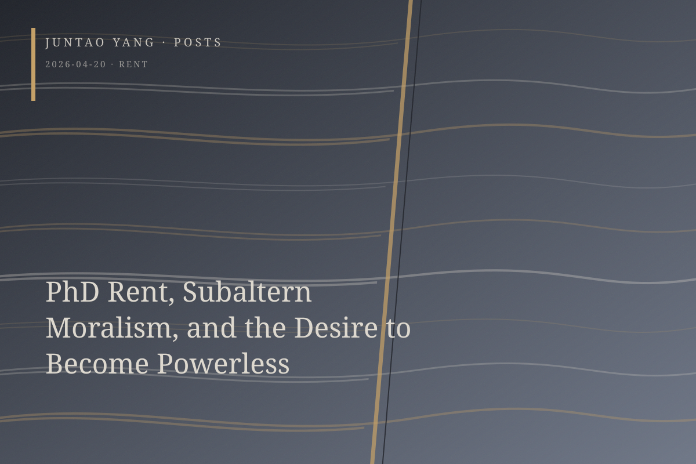

<content>
My PhD colleagues and I occasionally talk about housing. I committed early and have already chosen a university-owned studio for \$1,700 a month. What unsettles me is that my colleagues seem committed to finding housing at prices that are almost unbelievable: first, shared apartments below \$1,400; then an \$800 room in a six-person house on the Oakland periphery. My first reaction, honestly, was intense anxiety. Had I chosen something too expensive? Did that choice remove me from the ranks of the powerless and strip me of the virtue of poverty—things that seem to matter a great deal in liberal humanities circles?
The semi-bankrupt condition of being perpetually broke acquires a kind of spiritual sublimity, as if it indexed one’s distance from consumerism and even from capitalist modes of production and structures of power. Yet working in the academy already means living parasitically within an enormous system from which one cannot morally disentangle oneself, a fact made especially visible in wartime. In terms suggested by Rey Chow, this posture approaches a form of self-performance, for it rhetorically renounces the very material power that makes its rhetoric possible. One stands safely on dry ground, extracts symbolic capital from the struggles of others, and refuses to acknowledge one’s own privilege. In this way, one’s speech becomes the incarnation of virtue. How can anyone argue against someone who claims to stand with the oppressed, or even to be among them? Public performances of white guilt share the same rhetorical mechanism.
Everything begins to resemble a pursuit of poverty, subalternity, marginality, and the identity of the powerless. In the name of powerlessness, the speaker’s power is legitimated. This is not to say that attending to, or even representing, the powerless is necessarily disingenuous or fraudulent. It may be wholly sincere, yet it still sets this power dynamic in motion. Intellectuals who possess discursive power within the humanities acquire moral capital by asserting a form of subalternity. They ultimately rob the terms of oppression of their critical and oppositional force, depriving the oppressed even of a vocabulary for protest and rightful demand. The same logic inhabits humanitarian narratives that care for the downtrodden and even the theater of “speaking bitterness” as a revolutionary method.
Still, our PhD stipends hardly count as privilege in the Bay Area. Where, then, does this moral unease—this fear of losing powerlessness—come from? Is it my cultural capital? Yet how does mine differ from that of my colleagues? As a first-generation international Asian student, I may possess substantially less. Does choosing a \$1,700 studio over an \$800 shared room on the urban periphery disclose an expectation of quality of life, and does that expectation place distance between me and those who are truly poor?
Is there an answer? I would, of course, like someone to reassure me that the fact of reflecting on these questions is already good, perhaps even sufficient. But would that not simply be white guilt by another name? And if you insist that I am privileged, does my income not still hover at the threshold of subsistence?
</content>
April 20, 2026
PhD Rent, Subaltern Moralism, and the Desire to Become Powerless
The graduate student’s fear of paying too much rent reveals how powerlessness becomes a source of moral capital within liberal humanities culture.
